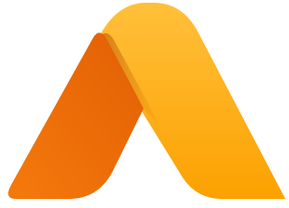

Ambar OS
Designed for Humans. Built for AI. Open to Everyone.
A complete desktop operating system that looks and works like macOS: menu bar, Dock, Launchpad, Control Center. Install any app. Automations and AI built in, and nothing runs without your OK.
Ubuntu 26.04 LTS · KDE Plasma 6Install any appAI that asks firstOpen source